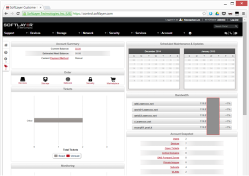
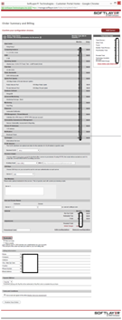
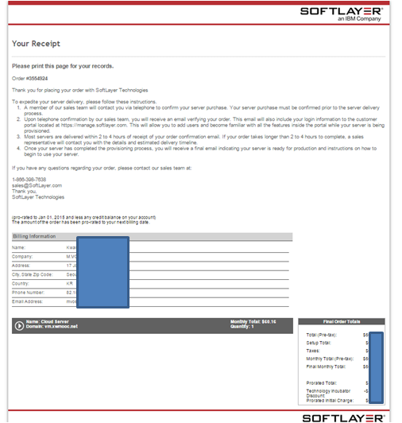
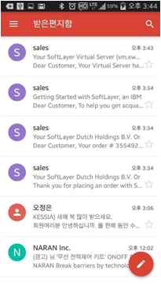
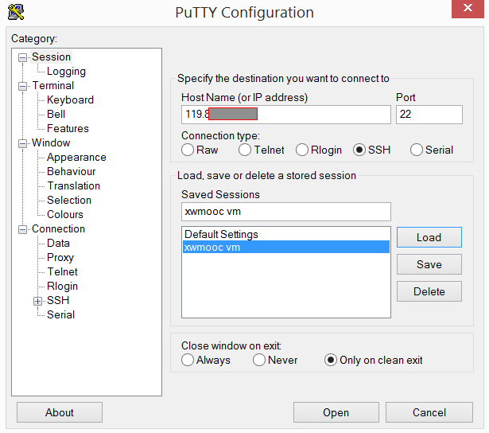
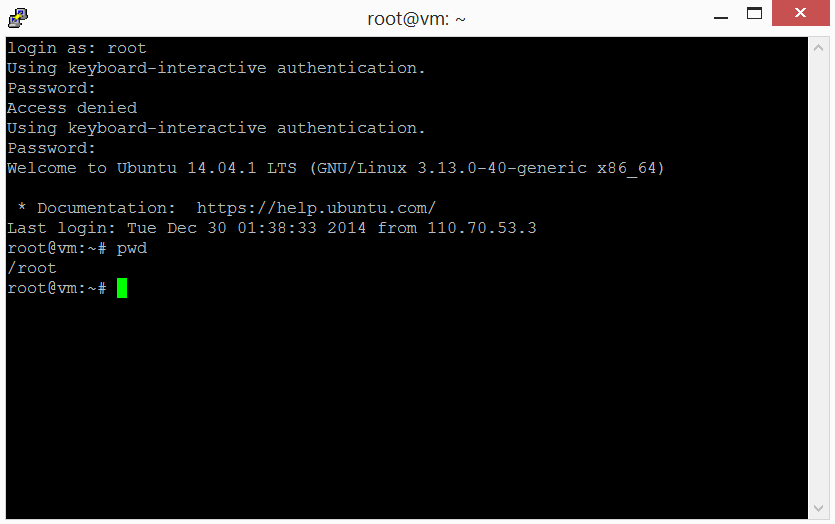

R 파이썬 소프트레이어 클라우드 그리고 xwMOOC
가상 컴퓨터 (virtual machine) 설치
학습 목표
- 클라우드 서비스 사업자 한곳을 선정 가상컴퓨터를 생성한다.
- 생성된 가상 컴퓨터에 원격 접속한다.
- 웹 서비스를 위한 기본환경을 구축한다.
- 웹 서비스를 띄워 웹 어플리케이션 개발을 위한 준비를 완료한다.
클라우드 서비스 사업자
국내외 클라우드 서비스를 제공하는 업체는 다양하며 특정 분야에 전문화된 사업자도 있다. 국내는 KT를 비롯하여 SKT 등 업체가 있고, 글로벌하게는 아마존, IBM, 마이크로소프트, 구글 등이 퍼블릭 클라우드 사업을 추진하고 있다. 클라우드 서비스는 모두 대동소이하여 IBM Softlayer를 기준으로 전반적으로 클라우드 서비스를 추진하는 것을 사례로 알아보고자 한다.
가상 컴퓨터 생성
- 클라우드 서비스 사업자 초기 화면 접속한다. 클라우드 서비스 시작하기
- 클라우드 서비스 계정에 가입한다. 클라우드 서비스 가입하기
- 클라우드 서비스 계정에 가입한다. 로그인 하기
클라우드 서비스 대쉬보드 화면.
가상 컴퓨터 생성하기 메뉴 상단의
Account -> Place an Order클릭하면Order SoftLayer Products and Services화면이 나오고 필요한 클라우드 서비스를 선택하여 구매한다. 일단 가상 컴퓨터를 생성해야 하니Device -> Virtual Server (monthly)를 선택한다.
가상 컴퓨터를 생성하는 것은 일반 전자상거래와 마찬가지로 상품을 선택하여 주문서를 작성하고, 장바구니에 담아, 주문을 하면 완료된다. 주문 내역은 빌링 및 구매이력 조회를 통해서 확인한다.
## 가상컴퓨터 구매 {.callout}주문서 작성 -> 장바구니 담기 -> 주문/영수증 -> 빌링 및 구매이력 조회
가상 컴퓨터 사양 선택 후 확정
  
가상 컴퓨터 선택 사양 항목
자신이 원하는 목적의 컴퓨터를 직접 고르는 것으로 과거 용산 전자상가 매장을 일일이 돌아다니면서 중앙처리장치, 주기억장치 용량, 하드디스크 용량, 그래픽 카드, 랜카드 및 필요한 소프트웨어를 설치하는 것을 몇번의 클릭을 통해서 수행할 수 있다.
- 가상 컴퓨터 수량 : 1 대부터
- 가상 컴퓨터 지역 : 홍콩, 미국, 유럽 등 가상 컴퓨터 설치 지역
- 시스템 사양
- 중앙처리장치 : CPU 속도, 코어 갯수 등
- 주기억장치 : 1 GB, 2GB, … 등
- 운영체제 : 윈도우, 우분투, CentOS, Debian 등
- 운영체제과 동시에 LAMP 등 기본 응용프로그램도 가상 컴퓨터 생성할 때 자동으로 설치 할 수 있다.
- 운영체제과 동시에 LAMP 등 기본 응용프로그램도 가상 컴퓨터 생성할 때 자동으로 설치 할 수 있다.
- 중앙처리장치 : CPU 속도, 코어 갯수 등
- 보조 기억장치 : 통상 하드디스크에 상응하며 주기억장치와 달리 비휘발성으로 자료보관을 위한 저장소로 25GB부터 선택 가능하다.
- 네트워크 : 네트워크 속도 옵션
- 시스템 소프트웨어 : 보안, 관리, 데이터베이스, 모니터링 등 기본적인 시스템 소프트웨어를 선택하여 설치한다.
- 스토리지 : NAS, 백업 등 스토리지를 추가 설치한다.
- 기타 서비스 : 모니터링, 보험 등 필요한 서비스를 추가 설치한다.
생성된 가상 컴퓨터 확인
상기 생성한 가상 컴퓨터가 제대로 생성되었는지 Devices -> Device List 에서 확인한다.
VM 목록
가상 컴퓨터 접속
가상 컴퓨터가 생성되었으면, 다음으로 가상 컴퓨터에 접속을 해야 한다. 윈도우 시스템에서 가상 컴퓨터에 접속하기 위해서는 별도의 프로그램이 필요하다. puTTY 사이트에서 다운로드하여 설치한다.
VM 상세정보
Public IP 주소를 puTTY에 포트번호 20으로 접속한다. root 사용자로 가상 컴퓨터에 담겨있는 비밀번호를 이용하여 접속한다.
 
가상 컴퓨터 생성할 때 LAMP도 함께 설치를 했는데 제대로 설치되었는지 mysql을 통해서 확인해 보자. 정상적으로 우분투 리눅스 운영체제상에서 설치된 것을 확인할 수 있다.
LAMP MySQL 설치 확인
웹서비스 테스트
가상 컴퓨터 생성할 때 기본적인 웹서비스를 위한 모든 소프트웨어를 설치했다. 이제 아파치 웹서버를 띄워서 제대로 개발 준비가 되었는지 확인해보자.
root@vm:~# sudo service apache2 restart
* Restarting web server apache2 [ OK ]
root@vm:~#아파치 웹서버 설치확인